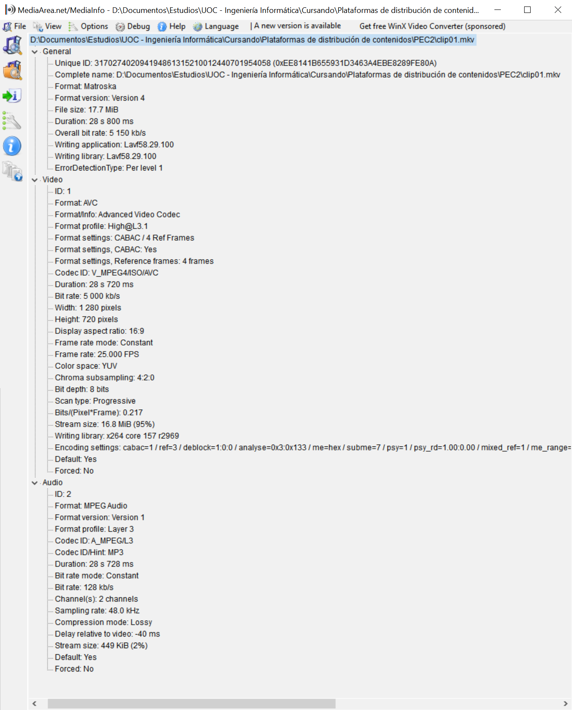

Tarea 2.1
Genera un clip de vídeo de calidad HD de unos 20 segundos de duración (o descárgalo de la web) que posea movimiento (algo equivalente al clip de futbol que hemos usado de ejemplo).
Sea cual sea su formato, conviértelo a MP4 mediante Avidemux con los siguientes valores y denomínalo clip01. La codificación de salida será MPEG4 AVC y en VIDEO OUTPUT-CONFIGURACION selecciona como modo de codificación TASA DE BITS MEDIA-DOS PASADAS (para mantener la calidad) y 5.000 Kbps. Como formato de audio, MP3(lame) y como contenedor, MKV. Incluye estos clips en la entrega de la práctica. Confirma con MediaInfo que Avidemux ha realizado la tarea correctamente.
Para esta parte de la PEC se ha utilizado el clip de vídeo mostrado a continuación. El clip ha sido obtenido de este enlace y en él se muestra una calle por la que circulan vehículos y viandantes. Se trata de un clip de vídeo de algo menos de 14 segundos por lo que al recodificarlo para este apartado se ha repetido el clip alargando su duración hasta los 28 segundos con el objetivo de facilitar el análisis de los streamings.
Imágenes de stock proporcionadas por Videvo, descargadas de www.videvo.net
El clip ha sido recodificado siguiendo las indicaciones y las características del clip según MediaInfo son las esperadas como se puede observar en la siguiente captura de pantalla.
